Hello everybody! My name is Russell Crowe, I'm an actor. A year and a half ago, my weight was 290 pounds, which is 130 pounds over the norm for my height.I put on that weight deliberately in order to play Roger Ailes, the late chairman and CEO of Fox News, on the Showtime series The Loudest Voice. I had to put on extra weight for some roles before, I got used to it and it seemed to me that I would lose weight easily as usual. But this did not happen - for several years I was fighting hard with my weight. And I lost this fight.
But this nightmare is in the past. I managed to lose weight using a virtually unknown method and it's possible that this post will be deleted soon. This new method is a true breakthrough in nutrition. Many dietitians are desperately trying to hide this method as revealing it would be quite disadvantageous to them. I spent lots of time and money torturing myself with diets and working out with personal fitness trainers. But nothing worked for me. I found another solution which happened to be so simple and accessible that it was hard to believe. Now I want to share this secret with everyone who has problems with extra weight and health.
Here is my story:
Having gained extra weight for the role I was sure that after the end of the filming I would easily get rid of extra pounds. But it was not another way. My body began rapidly growing in size, especially abdomen. I didn't even notice how I grew to an incredible size. I looked like a huge fat hog.
Besides, I got serious health issues. I experienced severe pain in my side, where the pancreas is located. I started suffering from easy fatigability, excessive sweating, and shortness of breath. But the most terrible thing which happened to me was impotency. To be honest, I couldn’t see my manhood because of my belly. When it stopped working at all, I realized that it was just too much. Impotency impacted my family life. My wife started fighting quite often. Not being able to satisfy my woman was a huge blow to my self-esteem. I hated myself and felt like a loser.
I underwent a medical examination in the hospital and the results were quite sad. My body was at a serious risk of diabetes. Many years of eating junk food killed my body, especially the pancreas.
I switched to a strict diet. When you eat everything you want your entire life a diet could become a real psychological torture. Every week I stood on the car scales hoping that my torment was not in vain. But my scales always showed 290 pounds. After 3 months I decided to bolster my diet with exercises and began going to the gym. A local trainer told me that my weight would start going down only in six months as my big weight made intense exercises too dangerous for me. Therefore, I was doing only simple exercises like walking on a treadmill, riding an exercise bike, did squats and jumping. But even doing simple 10 squats was tough for me. I was panting and felt dizzy. Other people who were in the gym grinned when looking at me. I agree, it's quite funny when a huge fat idiot is panting and sweating doing exercises which any retiree would easily do.
It was the toughest moment in my whole life. I was constantly hungry. Even in my dreams I saw food. I became very nervous and irritated. Perhaps I would have felt better if I had some support from my wife but she hated me. We fought all the time and she insulted me saying terrible things, like calling me a "Fat scumbag", "Loser" and saying "You never satisfied me". It was a disaster. My own woman didn't believe in me. Soon she left me for another man and filed for divorce.
After that, I tried to stick to my diet and do exercises in the gym for another month. But when my scales once again showed nasty 290 pounds I broke the diet. I resumed eating fast-food washing it down with spirits at the same time.
It was the time when I didn't want to live. I would have killed myself if not for my friend, an actor John Goodman. He saved me. I bumped into him and surprisingly I told John everything I'd been keeping inside. I felt ashamed of being an adult man who cried and whimpered like a little girl. But living with all this inside me was incredibly difficult. John was quite sympathetic. He listened to me attentively and said, - "Why didn't you tell me about this earlier? There is a much simpler weight loss method which is fast and safe. Here is a solution to all your issues. I've been using it for a long while and it really works." Having said that, he gave me a small jar with the inscription Realtone Keto He told me that it was a natural product for weight-loss and metabolism improvement.
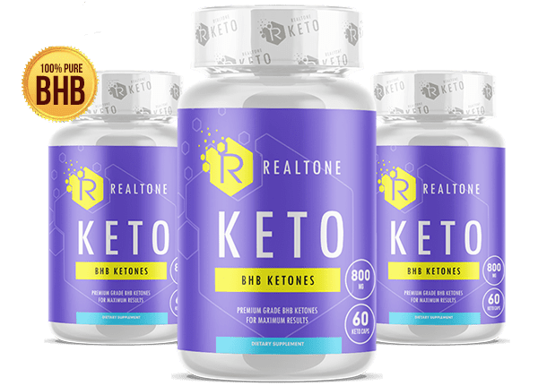It was hard to believe but still I did believe him because John was a case in point. He managed to lose 140 pounds.. I began searching the Internet trying to find the information on Realtone Keto and I found feedback from reputable Philippine dietitians who claimed that this product was a real breakthrough in nutrition. The product is natural, safe and has no special contraindications. Realtone Keto has been tested and certified. It's manufactured in strict compliance with the rules approved by GMP. It made me trust Realtone Keto and I began taking it following the directions for use. I took 2-3 capsules per day between meals..
My results:
After a week of taking Realtone Keto my weight was intact but I started feeling much better. I became vigorous and energetic. And after 14 days I was really shocked. My weight decreased by 19 pounds despite the fact that I ate all I wanted! Simple weight-loss without restrictions! It was staggering!
After 7 more days I managed to lose 20 pounds more! My fat was literally melting down fast and easy over the course of 2.5 months.
Every new day I felt a surge of energy and my side stopped aching. I also got rid of impotency. After my body was detoxified my erection became stronger and more durable (my average duration of sexual intercourse is 40-60 minutes). Besides, I became attractive in the eyes of the opposite sex. Women began showing affection to me. It was really awesome! Suddenly my ex-wife resurfaced and was trying to get me back. She was very apologetic but I didn't care anymore.
Now I want to briefly describe how it works - key ingredients of the beverage are chlorogenic acid, EXTRACT Realtone Keto and tannin.
1. They reduce carbohydrates absorbed by the gastrointestinal tract, thereby slashing the amount of harmful substances in the bloodstream. So you can eat whatever you like and harmful substances are not penetrating into your blood;
2. These ingredients facilitate the production of adiponectin, a hormone which is responsible for fat burning in the body;
3. Normalise the levels of cholesterol and sugar in the bloodstream;
4. Purge toxins.
I saw it all for myself when the results of my planned medical examination revealed that I was absolutely healthy. The manufacturer's promise was true. The levels of sugar and cholesterol in my blood were normal. And I ate everything I wanted and as much as I wanted. I think every normal man does it.
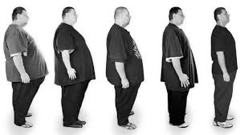Over 3 months of taking Realtone Keto, I managed to lose 160 pounds, and now I weigh 130 pounds. This weight loss is the official record for Australia and I am proud of it. Although my role in this miracle is small, it's all about
The medication is not addictive. I made a long pause between the intake courses and kept feeling well. Furthermore, the weight which I lost never came back. Now my stable weight is always 130 pounds.
Here is a link to the official website of Realtone Keto for those who want to lose weight fast and easy as I did. Take Realtone Keto and improve your health and life quality. The medication is remarkably cheap compared to the powerful effect you receive in exchange. PLEASE NOTE that it's the only website where you can order the authentic product. Other websites sell bogus products made in China which are ineffective. There are many such websites. When I was ordering Realtone Keto on the official website I was charged zero! I paid only when I received the product. I also want to add that the delivery was prompt. It arrived on the very next day.
If you've decided to try Realtone Keto I recommend you to do it right now as retail sale will stop on
SALE OF THE Realtone Keto OF Realtone KetoRealtone Keto improved my life immensely. I'm happy with what I look like, feel healthy and enjoy male attention. I think that sharing this experience was a must. Stop torturing yourself with diets! Take care of yourself. Best of luck.
Thanks for your attention. :-) Sincerely, Russell Crowe
In{city:en}, the special offer is live up to inclusive! To buy this product at a 75% discount, you have just to fill in a form on the official site of “Realtone Keto” and wait for a call to confirm your order.
EDITOR'S NOTE: Official suppliers of Realtone Keto™ have accepted to provide 75% discount exclusively to our readers for a limited period.
(BOTTLES ARE SOLD OUT EVERYDAY - ORDER NOW BEFORE THEY RUN OUT)
IMPORTANT: In clinical trials, it has been proven that you MUST use this product DAILY to achieve similar results.
 Update: There are only 2 samples left. End of 75% discount:
Update: There are only 2 samples left. End of 75% discount:
Step 1: 75% discount of Realtone Keto.
GET YOUR BOTTLE Take advantage of our exclusive link and pay only the shipping costs!
This special offer ends:

It's an absolute truth! I drank this a year ago and I lost 42 pounds within a month! I was getting slimmer every day! A year has passed since then and my weight is intact. It's 108 pounds!
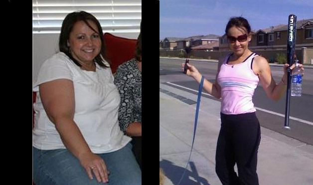

I've been drinking Realtone Keto for long as I know how effective it is. First I bought a fake which demonstrated zero effect. You can order authentic product only here and at a very low price. It works perfectly! You feel great and have a long, iron hard erection. Additionally, I lost 57 pounds. Pleasant bonus!
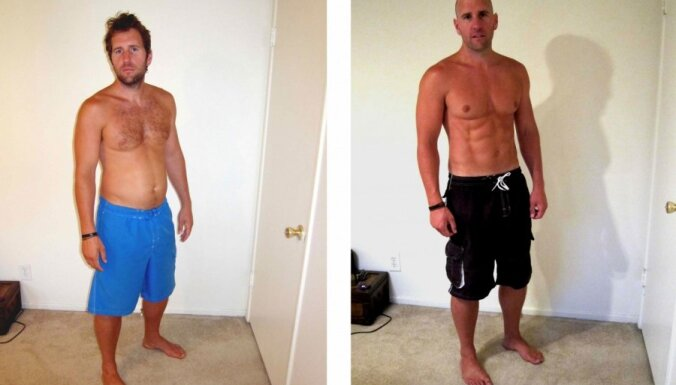

Can't agree more! Realtone Keto really works! I've struggled to get rid of abdominal fat for ages. I've been going to the gym for 3 months without any result. Then my wife ordered Realtone Keto for me and fat on my stomach vanished literally in a month!
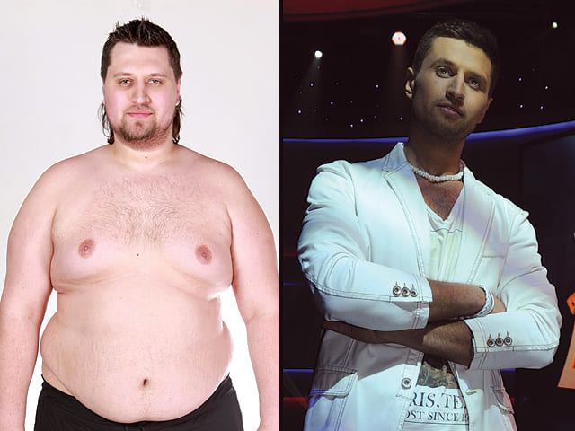
Your erection will certainly be stronger when all toxins are purged from your body.
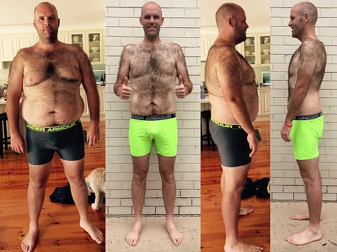
Has anybody ordered it yet? How long was the delivery?
I ordered it on the official website . The delivery was quick, took just 2 days. My trainer told me to take it. The results are awesome! I lost 68 pounds over 2.5 months.
I watched a TV-program with doctor Oz and other famous doctors telling about this medicine. They said that in 98% of overweight cases are caused by endocrine disorders, high sugar and cholesterol levels in the blood and the intensity of the metabolism. So it seems that the stories describing the effectiveness of this medicine are credible.

OMG! I bought it at a 75% discount! I’ll definitely try it and report the results. I’m entering a University this year, want to start a new life with a new body shape. I suffered the boys’ assaults in school, everyone believed I was fat. Now I’m gonna lose a dozen of pounds and be the queen!

68 pounds. My weight was 207 pounds! I remember how hard it was in the very beginning, remember all those doubts – would I succeed or not, would this be effective or not… It’s hard when no one supports you, especially if you weight is really large, but Realtone Keto burnt all those kilos… You know, it’ll be time to retire for me soon, I didn’t expect to get such a result!
Guys, ignore anyone who says you’ll fail, who says you won’t succeed. I succeeded, though at first I did not believe in success. You can lose even more pounds! I recommend Realtone Keto to everyone, it’s the only thing that managed to help me.

The special offer is already over in my city, but my friend bought several packets timely and shared them with me. Unfortunately, I can’t boast of a long-lasting result because I’ve been taking Realtone Keto for just a week. You won’t believe it, but I lost 6.5 pounds during the first 7 days, now there’re just 40 pounds left to lose! I’ll do it! No doubts :)
Hi! I lost 90 pounds in 2 months thanks to Realtone Keto, a decent amount of time has passed and my weight remains stable! Here’s my photo:
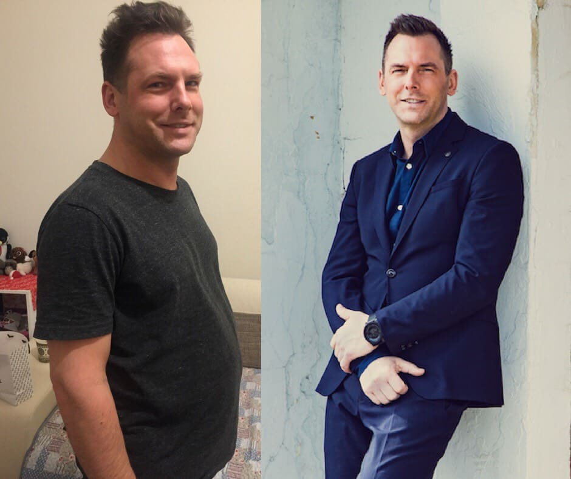

I managed to lose weight, too! Good luck everyone, I keep my fingers crossed for you!

I’m big-boned, but Realtone Keto was really helpful, the “before-after” difference is huge. I didn’t expect to be able to lose almost 90 pounds (I’ve only lose 80 pounds so far) at my age. I feel great! This solution is ideal for people like me! I definitely recommend Realtone Keto! Here’re my results:
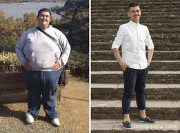

My weight was 198 pounds before I began taking Realtone Keto. I used to be slim when I was young, but then I gradually gained belly fat and love handles with age. When I was 35, I realized it’s time to get the things right. I spent almost a year working out, but couldn’t get my normal body shape. Then I added Realtone Keto to my diet and turned into a person whom I remember to be a young me literally in several weeks. Now I take care of my body shape and always have some Realtone Keto in reserve.
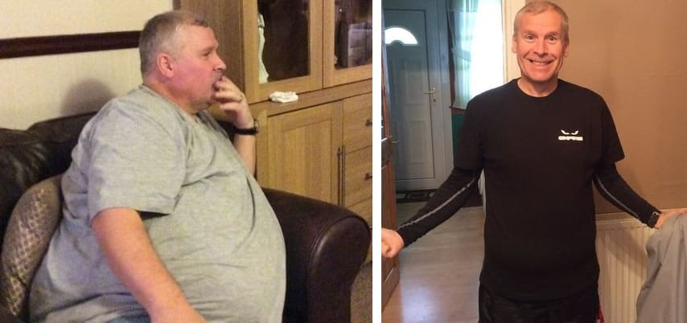
Realtone Keto really saved me. Several years ago, I got in a car accident after which I couldn’t move for 8 months. I gained 70 pounds while being a bed patient! I gradually began to walk with a walking stick, but exercises were out of the question, I was too weak, my weight made the case even more complicated. I tried Realtone Keto for the first time when my friend shared it with me. She gave me two packets as a present. Of course, I didn’t really hope on it, just decided to give it a try. I took it 3 times a day. I noticed the first changes in a week. Not that I lost a lot of weight, but it felt like my body speeded up, began to digest food faster and so on. I physically felt my metabolism increasing. I lost 9 pounds during the first 2 weeks without changing anything in my lifestyle! I lost the other 57 pounds in about 3 months. I’m very glad and I believe that I was just lucky to get it from my friend and give it a try. Don’t know what the situation would be otherwise, maybe, my weight would still be 196 pounds.
If you gain weight due to age, you should urgently get rid of it training on a running machine for several hours, but I heard that it’s harmful for the joints – in fact, it’s just jumping with excess weight, the joints can’t deal with it. The other option is to take Realtone Keto, as I did, it’s very convenient to recover with its help. Have a look at my achievement in the picture below! I keep it up ;)

What about just stopping to eat? Ok, when you’re a child, you just eat if they give you food. But you’re an adult woman, can’t you just control yourself and not eat?

Jodie, I hardly eat, it doesn’t help. My weight is at a standstill, it doesn’t decrease.

Your idea that only nutritionists know about Realtone Keto sounds surprising for me. Thank you! I lost almost 30 kg after undergoing just a single course of Realtone Keto, really big changes, large changes, I dare say. Of course, I don’t stuff myself with cakes, but I also don’t restrict myself from eating everything else. I eat potatoes if I want to eat potatoes. BEFORE AND AFTER PHOTO
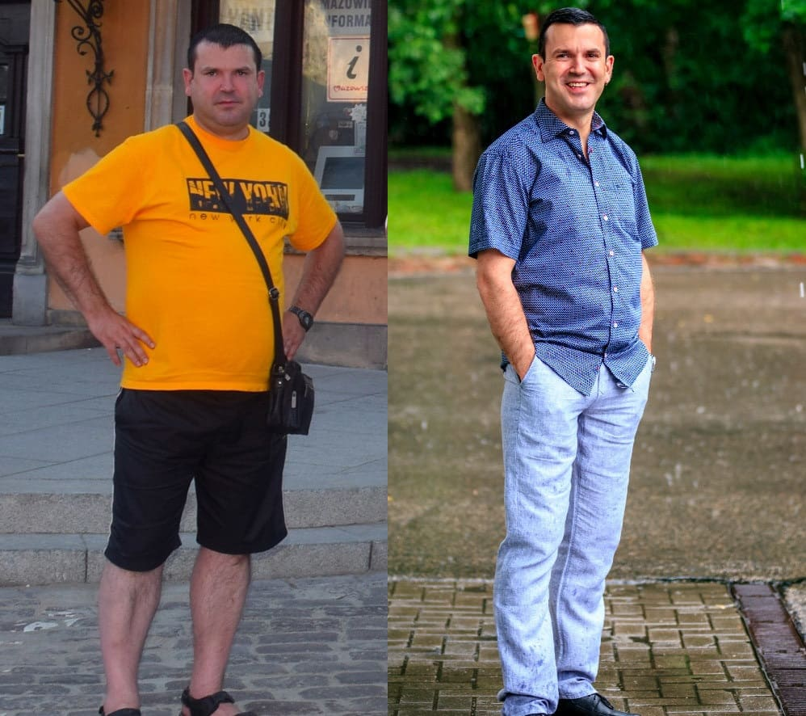

Why to standardize everyone? Why should everyone be thin? As for me, my weight is 174 pounds while my height is 5' 6" and I’m not ashamed of it. I love my look and feel great!
I NEED TO LOSE 9 KG URGENTLY!!!!!!!!!! I STAYED AT HOME FOR HALF A YEAR AND DIDN’T NOTICE MYSELF GAINING WEIGHT. WHAT IS TO BE DONE?? SOS!! I CAN’T KEEP DIETS, I HAVE NO WILL POWER, I FAIL THE DIETS AND THEN GAIN MORE WEIGHT. GYM ISN’T FOR ME, TOO, IT’S TOO BORING AND I’M TOO LAZY…………………………………… IS Realtone Keto EXACTLY WHAT I NEED?

My wife struggles with weight loss, too. When we got married, her weight was 116 pounds, and now it’s 150. The worst thing is that it’s OK for her. You’re right, you get used to your weight and it feels like it has been always been like this.

It’s great if it really works. You see, I’m a skeptic, I’m more likely to believe in the power of a cocktail rather than some pastilles. But, you know, there’re many things you can do for a good body shape, so I’m gonna order it.
I’ve been taking Realtone Keto since long ago. I had problems with excess weight, too, but now I don’t even think about it, I eat anything I want, and if I gain weight, I undergo a course and get back to normal again.
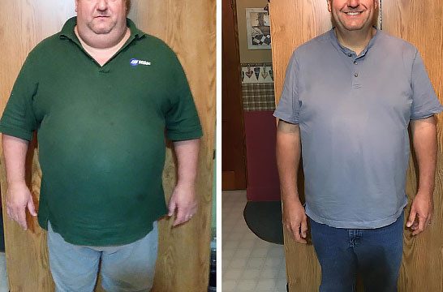

MY WEIGHT IS 213 POUNDS, DON’T KNOW HOW TO GET RID OF IT, DON’T WANT TO IT TO EXCEED 100. WHAT SHOULD I DO??? HELP!!! CAN I FIND Realtone Keto IN A DRUGSTORE?????

Eve, well, you can try to find it, but I managed to find only on the manufacturer’s official site, you know, it’s also more reliable to order it there.

Hello! I’m a mom of two and I’ve been trying to lose weight for as long as I can remember. I can’t keep diets, I fail just after a couple of days of doing it and them stuff myself with food. I have no time for sports. I read this article and I’m burning to try it, but I don’t clearly understand how to take it (for example, should I add it to something else or should I take it as it is?). Is there any instruction for use? Or, maybe, some recipe? Isn’t it harmful to give it up? Please answer my questions if you can or tell me where I can read about it. I'll be very grateful to you.
Hello! I’m 50 and I really wanted to lose weight. I knew well it’s harder to do it at my age, but I tried anyway. I decided to order Realtone Keto. The effect impressed me as soon as several weeks later! I lost 35 pounds!!! Of course, I kept a healthy diet and tried to exercise, but anyway, I didn’t expect such a result to come. Thank you for this article. I recommend everyone to buy Realtone Keto only on the official site, too.

I’m so happy with the fact that I happened to come across this article. You know, I used to think I’d never be slim. I began to take Realtone Keto just a week ago. I eat the same food I used to, but now I eat less. My ravenous appetite has somehow gone, I don’t want to eat something all the time anymore. To sum up, I don’t know who came up with the idea of this product, but I want to thank him or her.

It’s the biggest thrill when you crave for something but think that it’s almost impossible, and then a miracle happens. I’ve already lost 22 pounds and keep up the pace. My friends are surprised, they think I keep a strict diet, they’re worried about me. But I don’t tell them anything, may they guess :)
Guys tell me please where did you buy it? This weight loss product isn’t sold in the drugstores. I don’t want to get a fake, as far as I understand, it won’t work.

It’s a great weight loss product, it helped me to get rid of excess weight problems just in 2 weeks.
I was just looking for the information on Realtone Keto. Thanks for this detailed feedback!